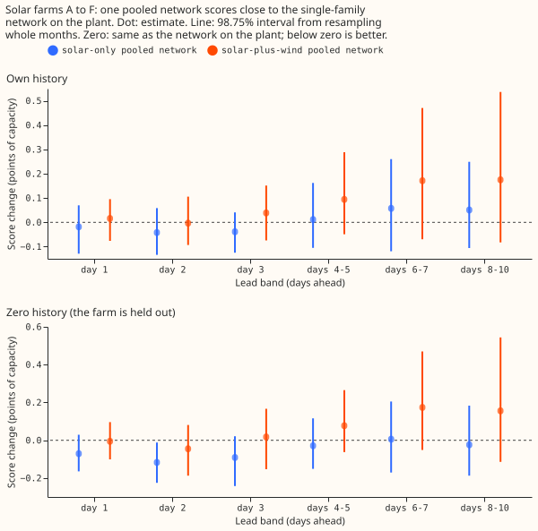
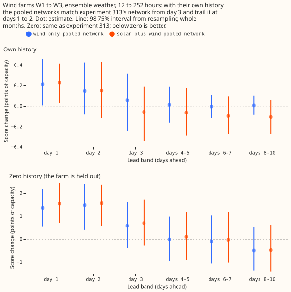
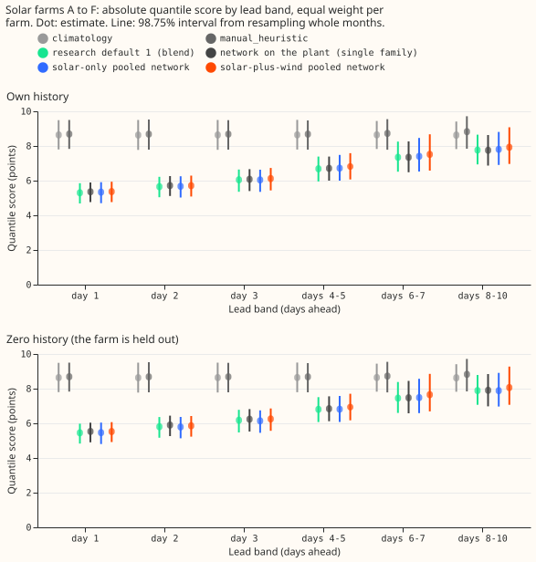
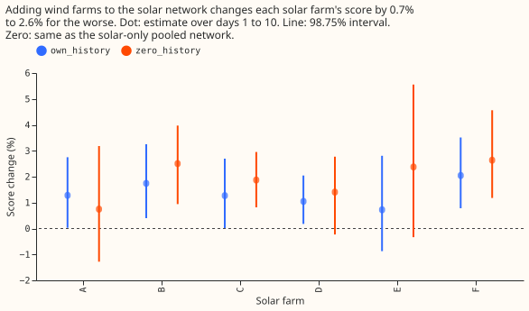
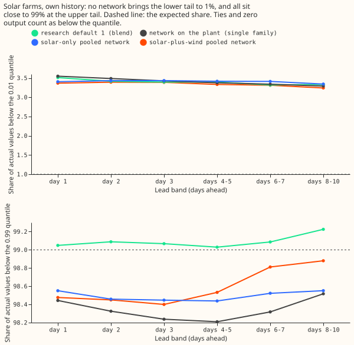

Does one pooled mixture-density network for all leads, trained on solar and wind farms together, match the best single-family forecast for each fuel, and help a farm with no history?
One neural network trained across all six solar farms forecasts each farm as well as a separate network on the physical plant model, to within 0.8%. Adding wind farms to the same network does not help either fuel, and it makes solar between 0.7% and 2.3% worse. National Grid Electricity Distribution (NGED) meters six solar farms, labelled A to F, and three wind farms, labelled W1 to W3. Experiment 313 and experiment 318 found that a mixture-density network (a neural network whose output is a mixture of three normal distributions, from which the 11 quantiles are read) that sees only weather and the calendar matches the plant-based network. We asked whether one such network, trained once for all leads on all six solar farms (and then also on wind farms, with a fuel indicator), keeps that skill. The quantile score is twice the mean pinball loss over the 11 quantiles, in points of capacity (1 point is 1% of capacity), and lower is better. "Own history" means the farm's earlier months are in training, and "zero history" means the farm is held out.
Scored at leads of 1 to 10 days for solar, and at 12 to 252 hours (0.5 to 10.5 days) for wind. The stored wind cases reach 351 hours, and the page does not score beyond 252 hours. Solar refits quarterly (experiment 310's screening schedule), wind trains once on rows before 2025-06-17. The pre-registered predictions: P1 holds at the point estimates but not by its interval rule; P2 and P3 fail; P4 holds. The verdict is partly supported, and nothing is adopted: the pooled network does not beat Metered solar farms research default 1 by 0.02 points, the minimum gain that the plan requires for a change that adds a new data source.





Results
- Arms (all five seeds averaged in own history, three in zero history). The reference is Metered
solar farms research default 1 ("default"): its blend (experiment 310) and its mixture-density
network on the plant (experiment 318, "network on the plant"). The default plus x arms are the
solar-only pooled network (weather and calendar inputs only, with the lead in hours as an input,
trained across the six farms), the wind-only pooled network (W1 to W3 plus 40 public wind farms),
and the solar-plus-wind pooled network (a fuel indicator, columns a fuel lacks set to zero),
bothis the solar-plus-wind pooled network, andboth_plantis the same network with the plant forecast added as an input column. The plan classes these arms as tier 2, a change that adds a new data source, which needs a gain of at least 0.02 points to be adopted. Controls: the fuel indicator shuffled, the wind targets shuffled,climatology, andmanual_heuristic. - Weather at each lag. Solar rows use the ECMWF ensemble mean at each lead, which exists at forecast time. Wind training rows use ERA5, which arrives about 5 days late, so ERA5 wind scores are a ceiling. The headline wind rows apply the network to each of the 51 ensemble members and mix the quantiles. The public wind farms' ERA5 rows carry no temperature (the column is masked and flagged).
- Row set. Solar: experiment 310's rows, farms A to F, 2025-09 to 2026-08. Wind:
fold_a_tuesdays_v1, kept rows of experiment 285's 53 Tuesday runs, 12 to 252 hours. - Schedule. Quarterly refits (screening schedule). The contrast between pooled and single-family networks could depend on cadence: a pooled network trained once, instead of refitted quarterly, scores 1.4% to 1.6% worse at days 1 to 3 in own history, and monthly refits change nothing measurable (-0.8% to +0.5%).
Solar quantile score (points of capacity, 98.75% interval), own history
| Arm | Day 1 | Day 3 | Days 8 to 10 |
|---|---|---|---|
climatology |
8.64 | 8.64 | 8.64 |
manual_heuristic |
8.69 | 8.68 | 8.83 |
| Default blend (research default 1) | 5.30 | 6.05 | 7.77 |
| Network on the plant (single family) | 5.36 [4.76, 5.90] | 6.08 [5.40, 6.67] | 7.75 [6.87, 8.64] |
| Solar-only pooled network | 5.34 [4.70, 5.92] | 6.04 [5.36, 6.64] | 7.80 [6.91, 8.81] |
| Solar-plus-wind pooled network | 5.37 [4.76, 5.93] | 6.12 [5.44, 6.73] | 7.93 [6.96, 9.08] |
Zero history: network on the plant 5.53, 6.23, 7.91; solar-only pooled 5.46, 6.14, 7.88; solar-plus-wind 5.53, 6.25, 8.06 (days 1, 3, and 8 to 10).
Predictions
- P1 (solar-only pooled within 1% of the network on the plant): holds at the point estimate, cannot be shown by the interval. The change is -0.7% to +0.8% in own history and -2.0% to +0.1% in zero history, with intervals about 4 points wide (for example -2.0% to +0.7% at day 3, own history). The pooled network is not worse than 1% in any band, and it is better in zero history at day 2 (-2.0%, interval -3.9% to -0.2%).
- P2 (adding wind within 1% of solar-only): fails on solar. Solar-plus-wind is worse by 0.7% to 1.6% in own history and 1.2% to 2.3% in zero history, with interval lower ends above zero from day 3 in both settings. On wind, solar-plus-wind is within 1% of the wind-only network in own history (-1.3% to +0.2%, intervals about 4 points wide) and 0.1% to 2.0% worse in zero history.
- P3 (pooling helps with zero history by at least 2%): fails. Solar-plus-wind is 1.2% to 2.3% worse than solar-only, and 0.1% to 2.0% worse than the wind-only network, with no history.
- P4 (0.99 pinball loss no worse than the default blend at days 3 to 7): holds. The pooled solar-only network is 7.0% to 8.2% lower and solar-plus-wind 6.0% to 6.1% lower in own history (intervals below zero).
- Stop rule: not triggered. Adding wind raises the score by more than 2% at days 1 and 2 at no farm (largest +1.5% at farm F, interval 0.5% to 2.9%).
Standard architecture and the best family
- Solar. The standard architecture (the brief's shared design: the plant, no neural input adapter, and a mixture-density head) is within 1% of the best single family (the solar-only pooled network, or experiment 313's pure network at days 1 to 2) at every band in own history (0.4%, 0.8%, 0.6%, then -0.2% to -0.8%), with intervals about 4 points wide. In zero history it is 2.0% worse at day 2 (0.2% to 4.0%) and within 1.5% elsewhere.
- Wind. On ERA5 weather (the stored neural-adapter forecasts have no ensemble version) the physics core with the neural adapter (no mixture-density head) is within 0.25% of experiment 313's pure network over 12 to 252 hours (-1.6% to +2.9%) and 5.7% better than the wind-only pooled network (-9.2% to -2.3%). The pooled wind network is the weaker family on ERA5 weather, because the 40 public farms outnumber W1 to W3 in training.
- Shared with the Primary-demand research default. The mixture-density head family is shared. The plant (a physical model of one farm's output) is not shared with the demand model, and the lead band structure differs.
Controls and checks
- Shuffled wind targets are 30% worse on wind (21% to 40%), so the wind gain is not extra rows. The shuffled wind targets make solar 0.6% to 1.1% worse than the real wind rows do (three seeds against five, so part of that gap is seed averaging). So the real wind rows worsen solar less than shuffled wind rows do. Shuffled fuel indicator makes wind 0.7% worse (0.3% to 1.1%) and solar 0.8% to 1.2% worse, so the network uses the indicator a little.
- Plant column (
both_plantagainstboth): -0.9% to -0.4% own history, -0.5% to 0% zero history, intervals including zero. The plant adds nothing measurable, as in experiment 318. - Tail calibration (own history). The share of actual values below the 0.01 quantile is 3.2% to 3.5% for every arm (experiment 318 reported 3.3% to 3.7%; experiment 321 found a lower share with a stricter count). The share below the 0.99 quantile is 98.2% to 98.9% for the networks and 99.0% to 99.2% for the blend (Figure 5).
- Median minus mean forecast is 0.3 to 0.8 points of capacity for the networks and 0.04 to 0.7 for the blend; the networks' quantiles are never crossed (crossing rate 0).
- Mean-forecast error beside each contrast. The absolute error of the mean forecast moves the same way as the quantile score for solar-plus-wind against solar-only (+0.8% to +1.3% own history, +1.4% to +1.8% zero history) and for solar-only against the network on the plant (-0.7% to +0.8%).
- Audit triggers. The audit checklist requires an explanation whenever results contradict the pre-registered predictions, which happened for P2 and P3. The explanation offered, not proven, is that a shared network of 64 hidden units and a fixed 20-epoch budget fits both fuels less well than it fits one. The shuffled-wind control worsens solar by a similar amount, which is consistent with limited network size and not with a wind-specific harm. See the audit below.
Caveats
- Wind own history is a different design from experiment 313. Experiment 313 trained one network per farm on that farm's ERA5 history; here one network trains on W1 to W3 and 40 public farms. Both pooled networks are 2% to 3.5% worse than experiment 313 at days 1 and 2, and the day-1 interval (0.1% to 6.8% for the wind-only network) is not stable across the two halves of the year (+2.1% in the first, +5.5% in the second). Both pooled networks match experiment 313's network from day 3.
- Wind zero history is a different design from experiment 313. Experiment 313 trained on the other two metered farms; here W1 to W3 are held out and the network trains on 40 public farms (ERA5, no temperature). The wind-only pooled network scores 18% to 20% worse at days 1 and 2 than experiment 313's network (6.5% to 36% interval), and equal from day 4. Training on the public farms alone is a poor start for a wind farm with no history at short leads.
- The solar-only pooled network is one network across farms and lead bands, and the network on the plant is one network per farm and per band, so "within 0.8%" compares different pooling. Experiment 318's one head per farm across all bands scores 0.01 to 0.03 points lower than its per-band head at every band, so pooling across bands alone is not what separates the two.
- Wind scores use experiment 285's nine-level weighted score and solar scores use the mean over 11 levels, so a wind number and a solar number must not be compared.
- Intervals on the solar contrasts are about 4 points wide, so "within 1%" cannot be shown by interval for any single band.
- Own-history solar scores use the same six farms in training and scoring, with a quarterly refit schedule. Weekly retraining was not run.
Audit
A fresh Sonnet auditor re-derived the solar and wind contrasts from the stored predictions and found
no leakage (training rows end before each refit's cutoff, the validation split lies inside the
training range, scored runs never feed training, and the wind networks train on rows before
2025-06-17). It confirmed the headline contrasts to within a 22-row difference in the row set. The
auditor counted 30 public wind farms where the preparation script printed 40 qualifying farms, and
the page uses the script's count. The auditor's report is in the private
data/ml-experiments/briefs/ folder.
What to try next
- Train wind on metered wind farms only (own history), and test whether public farms help with a weight on the metered farms.
- The solar-only pooled network is a candidate for the solar forecast of a production update. A production-style run against plant-fed XGBoost would test it.